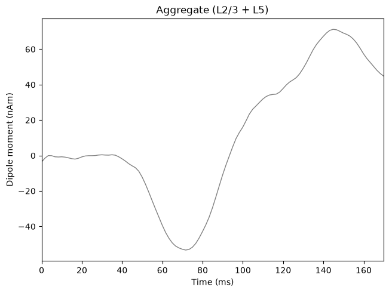
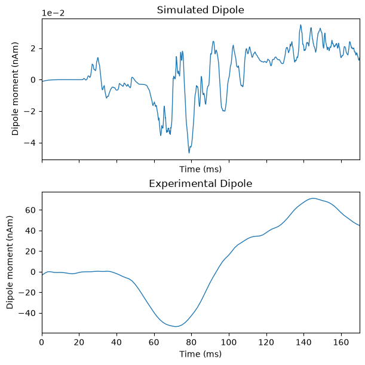

4.5 Simulate the Default Network
Simulate the Default Network
Let's begin by importing all of the dependencies we will need for this section of the tutorial
from urllib.request import urlretrieve
import matplotlib.pyplot as plt
from hnn_core import (
JoblibBackend,
MPIBackend,
read_dipole,
simulate_dipole,
)
from hnn_core.network_models import add_erp_drives_to_jones_model
from hnn_core.viz import plot_dipole
Load Experimental Data
Following the typical experimental workflow outlined in the Simulation Workflow page, we will begin by importing some real experimental MEG data.
As a reminder, the data we use in these tutorials are from the Jones et al. 2007 study, as detailed in the Introduction and ERP Overview page.
Using the code below, we can fetch the data for the treshold-level
tacile evoked response directly from our lab's hnn-data
GitHub repository. (If you prefer, you can also clone the
hnn-data repository to your local machine and import the
data from there)
# link to the data in the `hnn-data` GitHub repository
data_url = "https://raw.githubusercontent.com/jonescompneurolab/hnn-data/main/MEG_detection_data/yes_trial_S1_ERP_all_avg.txt"
urlretrieve(
data_url,
"yes_trial_S1_ERP_all_avg.txt",
);
Once we've fetched the data, we can load it with the
read_dipole() function and assign it to a variable; in this
case, we assign it to the variable named
threshold_experimental_dpl. This process will load the
experimental data as a Dipole object that can be used with
hnn-core.
The Dipole object has various attributes that we will
not explore in detail at this time. For now, we will focus on two
specific data attributes: times and data.
Let's examine these attributes in more detail.
# load the experimental data as a `Dipole` object and
# assign it to a variable
threshold_experimental_dpl = read_dipole(
"yes_trial_S1_ERP_all_avg.txt",
)
# assign the `times` data attribute to a variable
threshold_times = threshold_experimental_dpl.times
# assign the `data` data attribute to a variable
threshold_data = threshold_experimental_dpl.data
print(
f"Object type: {type(threshold_experimental_dpl)}",
f" Data type: {type(threshold_data)}",
f" Times type: {type(threshold_times)}",
sep="\n",
)
We can see that the data attribute is a dictionary,
while the times attribute is an array. As the names imply,
the current dipole data are stored in the data dictionary,
while the timesteps are stored directly in the times
attribute.
Let's examine the data dictionary in more detail,
printing its keys and value types.
print(
"# Examining the `data` dictionary:",
"# " + "-" * 40,
sep="\n",
)
for key, value in threshold_data.items():
print(
f'Key: "{key}"',
f" Value type: {type(value)}",
sep="\n",
)
We can see that the data dictionary has a single key
named agg that points to an array.
Since the source data yes_trial_S1_ERP_all_avg.txt has
two columns (you can verify this by pasting the URL above in your
browser and examining the data), the read_dipole() function
assumes that one column represents the times (in miliseconds), and the
other represents the aggregate current dipole (in nano-ampere meters,
nAm).
Therefore, the agg key in our data
dictionary refers to the aggregate current dipole.
If our source data had four columns, read_dipole() would
assume that the columns correspond to: 1) times (ms) 2) aggregate
current dipole (nAm) 3) L2/3 current dipole (nAm) 4) L5 current dipole
(nAm)
In the above case, the data dictionary would contain
additional keys for the L2/3 and L5 current dipoles.
Now that we've explored the loaded data objects, let's go ahead and
use the built-in Dipole.plot() method to view the data
_ = threshold_experimental_dpl.plot()

You can see that the built-in plot method is assuming that the units of time are in miliseconds, and that the units of the current dipole are in nAm. The data plotted are for the Aggregate dipole, which is the sum of the Layer 2/3 and Layer 5 dipoles.
Prepare the Default Network for Simulation
Remember that exogenous inputs (modelled as spike trains arriving at the proximal or distal locations in the network) are necessary to drive network activity.
However, the jones_2009_model() does not have external
driving inputs by default. We can verify this by confirming the
external drives data attribute is empty
print("Check if the `jones_2009_model` includes external drives ...")
if jones_2009_model().external_drives:
print(" Existing drives found!")
else:
print(" No drives found; `jones_2009_model().external_drives` is empty")
We can add the default drives for simulating ERPs automatically using
the add_erp_drives_to_jones_model() function we imported
from hnn_core.network_models. (You can also manually add
individual drives, and we will cover how to do so in a future
section.)
Let's first check if there are an external drives already attached to
our network object net default; if not, we'll add the
drives using the aforementioned function.
Lastly, we will inspect the drives attached to
net_default. For simulating ERPs, we expect to see two
proximal drives and one distal drive.
# if there are no drives attached to the Network, then add them
if not net_default.external_drives:
print("No existing drives found. Adding default external drives ... ")
# add the default external drives for ERP simulation
# note:
# the drives are added to the object **in place**, meaning we don't
# need to assign the output back to the `net_default` variable
add_erp_drives_to_jones_model(net_default)
print("The following drives were added:")
else:
print("Existing drives found on the network object.")
print("Printing existing drive names:")
for key in net_default.external_drives.keys():
print(f" {key}")
Next, let's check the arrival time of each drive. Remember that for ERPs, we expect an initial feedforward (proximal) input, followed by a feedback (distal) input, followed by a second feedforward (proximal) input.
As discussed in the Introduction and ERP Overview page, this sequence of driving inputs was based on studying evoked potentials in animals using invasive recordings, and served as our starting point simulating human ERPs with HNN.
Note that the _NetworkDrive object behaves like a
dictionary, meaning we can access its contents using keys with the same
syntax used for dictionaries.
To get the mean arrival times, we need to access a value stored
within the dynamics data attribute of each
_NetworkDrive object. The dynamics attribute
contains a dictionary of parameters, including the mu key,
which stores the mean arrival time. Because _NetworkDrive
objects behave like dictionaries, we can access this value using the
nested key structure drive["dynamics"]["mu"].
# ----------------------------------------
# inspecting a single drive object
# ----------------------------------------
# let's first inspect a single external drive object to understand
# its structure
# we can create a pointer to the "evdist1" object like so
drive_key = "evdist1"
drive_object = net_default.external_drives[drive_key]
# as mentioned above, we'll be accessing the value of the "mu"
# parameter in the "dynamics" data dictionary.
# we can create pointers to these objects to make the printouts
# below more readable
drive_dynamics = drive_object["dynamics"]
mean_arrival = drive_dynamics["mu"]
# cleanly print out properties of the drive object
# ----------------------------------------
print(
"# " + "=" * 40 + "\n",
"# Examining one drive object in detail",
"\n# " + "=" * 40 + "\n",
sep="",
)
print(
"# Investigate the `_NetworkDrive` object",
"# " + "-" * 40,
f"Drive type: {type(drive_object)}",
f'Drive name: "{drive_object["name"]}"',
f"Drive keys:\n\t{str(list(drive_object.keys()))}",
"",
f'# Examining the "dynamics" data attribute of the "{drive_key}" drive',
"# " + "-" * 40,
f"Attribute type: {type(drive_dynamics)}",
f"Attrubute keys: {list(drive_dynamics.keys())}",
"",
sep="\n",
)
# ----------------------------------------
# inspect the value of "mu" for each drive
# ----------------------------------------
# now let's loop through each drive and print the
# value of "mu" (i.e., the mean arrival time)
print(
"# " + "=" * 40 + "\n",
'# Print each drive\'s "mu" parameter',
"\n# " + "=" * 40 + "\n",
sep="",
)
for key, drive_object in net_default.external_drives.items():
mean_arrival = drive_object["dynamics"]["mu"]
print(
f'Mean arrival time for "{key}": {mean_arrival} ms',
sep="\n",
)
We can see that the drives we added do follow the expected sequence: a proximal drive arriving first at ~27 ms, a distal drive arriving second at ~64 ms, and a second proximal drive arriving last at ~ 137 ms.
Now that we've added the external drives to the Network,
we are nearly ready to run our simulation of the threshold-level
ERP.
Run the Default Simulation
Before running the simulation, we need to choose a backend. HNN-core supports both the Joblib backend (which can run independent simulation trials in parallel), and the MPI backend (which can distribute the computation of a single simulation trial across multiple processes)
You can try running the simulation with both Joblib and MPI and
compare the simulation speeds by changing the use_MPI flag
below from False to True, or vice versa
Additionally, you should set the number of cores to use based on your machine's resources. There are instructions on how to check the number of available cores on the Installation page.
# choose a backend, and select the number of cores
# --------------------------------------------------
# try changing the use_MPI flag and comparing
# the simulation speeds
use_MPI = True
if use_MPI is False:
chosen_backend = JoblibBackend
else:
chosen_backend = MPIBackend
# when calling our `chosen_backend` below, we can
# explicitly set the number of cores to use
#
# in general, more cores = faster simulations
ncores = 4
The simulate_dipole() function below is the main
function for generating simulated dipole signals from a
Network object. It has two required arguments:
the
Networkobjectthe simulation duration (specified in ms)
The function accepts additional simulation parameters, including the integration timestep, the number of trials, and more
Once we've selected a backend, set the number of cores, and specified our required (and optional) simulation parameters, we're finally ready to run the default simulation for the threshold-level ERP
Note the syntax used to simulate the Network below. We
use a with statement to run the simulation using the
selected parallel backend (stored in chosen_backend in this
case). The simulate_dipole() function is called inside this
block, and the resulting output is assigned to the variable
dipoles_list.
When we run the simulation below, hnn-core computes the
cell and circuit activity, calculates the current dipoles, and returns a
list of Dipole objects (one per each trial).
# set additional simulation parameters
tstop = 170.0 # length of the simulation
dt = 0.025 # integration timestep
n_trials = 1 # number of trials
# run the simulation
with chosen_backend(ncores):
dipoles_list = simulate_dipole(
net=net_default,
tstop=tstop,
n_trials=n_trials,
dt=dt,
)
# mod_shrink_output
Plot Default Simulation with Data
The simulation we just ran yields a dipole signal in units of nanoampere-meters (nAm). Remember that source-localize MEG and EEG data yield dipole signals in these same units of nAm. By representing the simulation and the experimental data in the same units, HNN enables a one-to-one comparison between the two signals.
Next, let's plot the experimental data alongside the simulated dipole output and compare the two signals directly.
fig, axes = plt.subplots(
nrows=2,
ncols=1,
sharex=True,
figsize=(6, 6),
constrained_layout=True,
)
_ = plot_dipole(
dipoles_list,
ax=axes[0],
layer="agg",
color="#1f77b4",
show=False,
)
_ = threshold_experimental_dpl.plot(
ax=axes[1],
show=False,
)
# style figure
# --------------------------------------------------
# set line colors to match the accompanying GUI video
for subplot in axes:
subplot.lines[0].set_color("#1f77b4")
# add subplot titles
axes[0].set_title("Simulated Dipole")
axes[1].set_title("Experimental Dipole");

You should note that the simulated dipole signal and the loaded data look quite different in both their shapes and their magnitudes.
These discrepancies are due to the fact that
simulate_dipole() returns a list of raw
dipole signals. There are some post-processing steps we need to follow
before we can truly compare our simulated and experimental dipoles, and
we will discuss these steps in the next section.